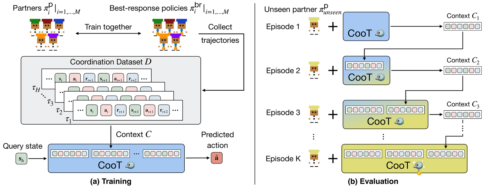
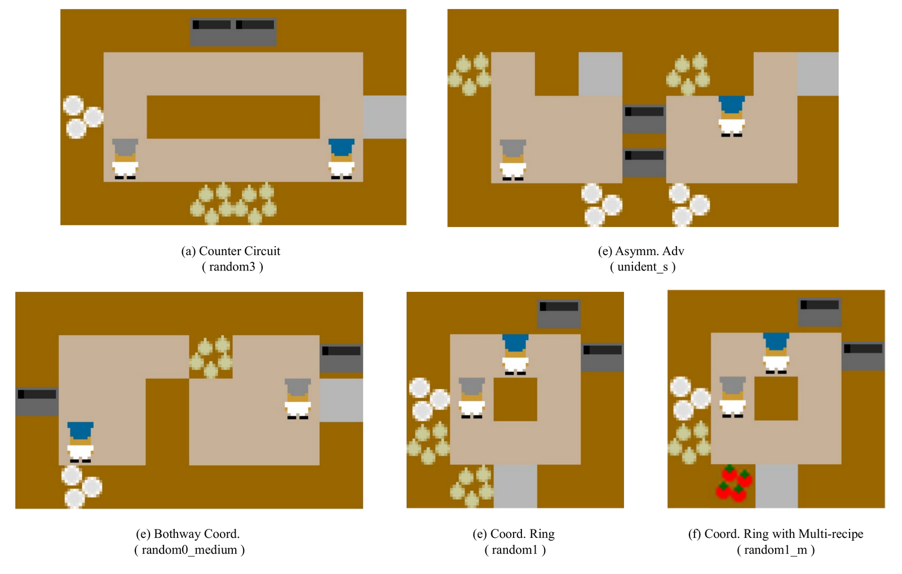
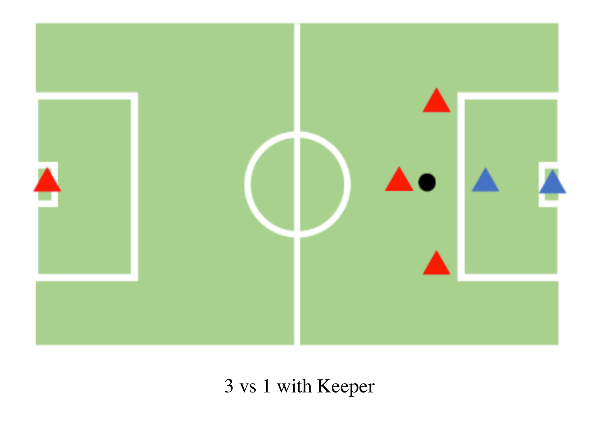
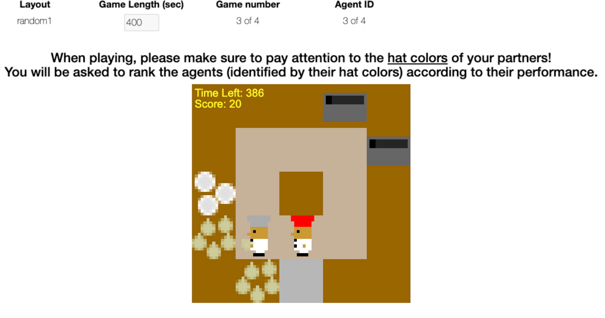
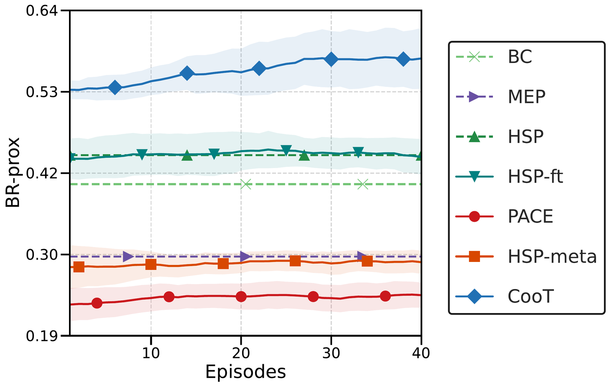
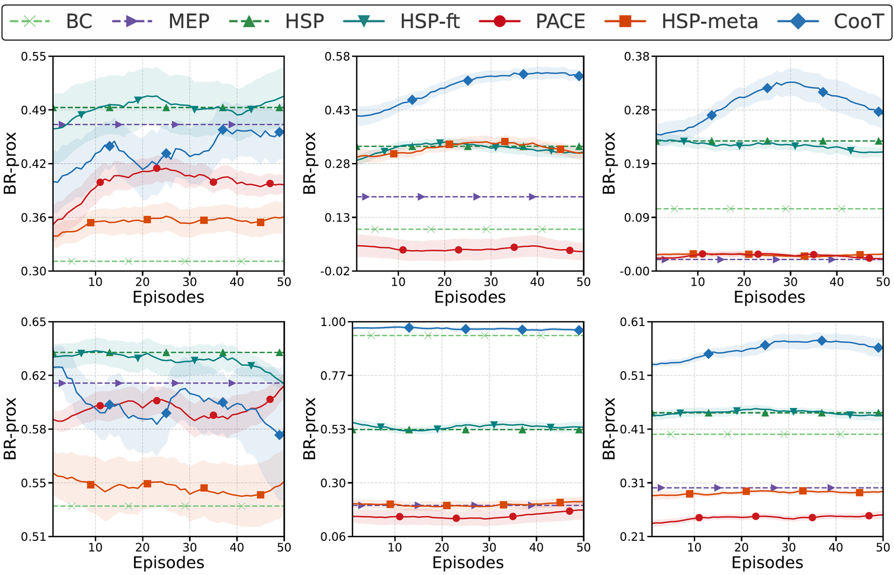
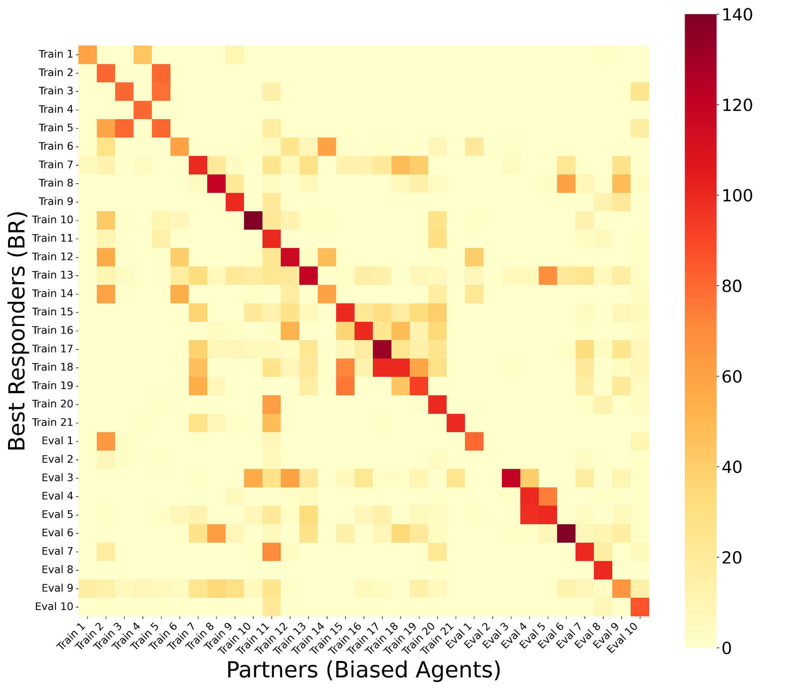

§030 秒速覽
四個關鍵數字，抓住全文骨架
§1問題：陌生隊友為什麼難帶
ad-hoc teamwork——和沒一起訓練過的搭檔臨時組隊
多 agent 合作最尷尬的場景：你訓練好的 agent 遇到一個從沒見過的隊友（可能是別家的 policy，可能是人類），還是得把工作做好。這在文獻裡叫 ad-hoc teamwork。論文把既有路線的失敗模式排了一遍：
| 路線 | 代表方法 | 失敗模式（論文說法） |
|---|---|---|
| Self-play | SP | 和自己的複本對練，收斂到一套「內部暗號」（conventions），遇到不懂暗號的陌生隊友直接崩潰 |
| Population-based | MEP、HSP | 靠多樣化隊友池提升穩健性，但沒有線上適應機制——出了訓練分佈就沒轍 |
| 測試時微調 | HSP-ft | few-shot 場景不可行：學會協調往往要數千到數百萬條互動軌跡，且對 learning rate 極敏感 |
| 壓縮 context 的 meta-RL | PACE、PECAN、LIAM | 把互動歷史壓成固定 latent 向量——壓縮丟資訊，隊友行為一超出訓練分佈，encoder 給出誤導表徵 |
CooT 的切入點是 LLM 世界已經驗證過的能力：in-context learning——固定權重的模型，靠 prompt 裡的範例就能在推論時改變行為。但既有的 in-context RL（Decision-Pretrained Transformer、Algorithm Distillation）都在解「任務泛化」：換個迷宮、換個 reward。CooT 要解的是隊友泛化：環境不變，變的是搭檔的偏好和習慣，而且對方不會給你任何顯式回饋。
§2方法：每種隊友 = 一個任務
DPT 架構不變，學習目標從「解任務」換成「回應隊友」

怎麼製造「有個性的隊友」：Hidden-Utility Markov Game
訓練資料的關鍵是要有一池行為多樣的隊友。論文沿用 HSP 的 Hidden-Utility Markov Game（HU-MG）框架：在共享的環境 reward 之外，給每個隊友一個只有它自己看得到的隱藏 reward——由離散環境事件（撿洋蔥、拿盤子、送餐⋯⋯）的線性組合構成。同一張地圖上，「討厭拿盤子」和「喜歡站著不動」的隊友會演化出完全不同的行為習慣。這種 agent 論文稱為 behavior-preferring agent：偏好藏在 reward 裡，只透過行為顯露。
訓練目標非常樸素：cross-entropy L = −log p̂(â)，其中 â 是 best-response policy 在該 query state 的動作。架構就是 GPT-2 backbone（沿用 DPT）。全部的巧思都在資料的定義：context 是「這位隊友＋它的最佳搭檔」過去幾局的原始互動軌跡，模型要學的映射是「看行為 → 推偏好 → 給回應」。
部署：冷啟動 + FIFO context
測試採嚴格無先驗協定：面對新隊友，context 初始化為 T 條「空軌跡」，第一局完全裸打。每打完一局，整條軌跡 (s, a, r) 進 context buffer、擠掉最舊的一條。評估用的陌生隊友池也講究：用行為特徵的相似度矩陣做 Determinantal Point Process（DPP）抽樣，保證挑出來的 10–15 位評估隊友彼此行為夠不一樣。
§3實驗設定：兩個基準、七個對手
Overcooked 主戰場 + Google Research Football 驗證擴展性

Overcooked（ZSC-Eval 實作）：兩人煮湯送餐，每成功送一碗得 sparse reward 20。GRF「3 vs 1 with Keeper」：三名進攻球員（P0 持球、P1、P2）對一名後衛加守門員，透過 P0/P2 的兩組事件組合出 144 種偏好 reward 製造隊友多樣性，P1 的 best-response 軌跡拿來訓練 CooT，指標是 200 步內的進球率。

訓練資料規模：36 個 best-response policies（15 個來自 MEP、21 個來自 HSP，依事件多樣性貪婪挑選），每個收 200–250 條軌跡。context 視窗 = 5 局，訓練時搭配 context masking（隨機丟掉較舊軌跡，逼模型倚重近期互動）。
| 基線 | 類型 | 測試什麼假設 |
|---|---|---|
| BC / BC-RNN | 模仿學習 | 監督式模仿（含局內記憶）能否泛化到陌生隊友 |
| MEP / HSP | population-based RL | 訓練期多樣性是否足以取代線上適應（皆為 recurrent policy，且用手工 dense reward 訓練——CooT 只用 sparse，比較對它們有利） |
| HSP-ft | 測試時微調 | few-shot 提升能否靠 gradient 達成 |
| HSP-meta | PEARL 式 meta-RL | 把軌跡壓成 latent context 是否足夠 |
| PACE | context + peer identifier | 再加一個「猜隊友身分」的模組會不會更好 |
評估協定沿用 ZSC-Eval：每張地圖固定 10 位（Multi-recipe 15 位）DPP 挑出的陌生隊友，各連打 50 局讓 CooT 累積 context。主指標 BR-prox：你的得分除以「該隊友的專屬最佳搭檔」的得分——1.0 代表打得跟量身訂做的搭檔一樣好。附錄另比 GAMMA（生成式隊友建模）與 PLASTIC（貝氏 policy 挑選，Coord. Ring 上 19.4 vs CooT 38.3）。
§4主結果：協調需求越重，領先越多
五張地圖 + GRF；粗體 = 落在最佳方法一個標準差內
| 方法 | Coord. Ring | Multi-recipe | Counter Circ. | Asymm. Adv. | Bothway Coord. | Overall（Return / BR-prox） |
|---|---|---|---|---|---|---|
| BC | 26.2 | 9.0 | 10.8 | 108.8 | 99.0 | 50.8 / 0.40 |
| BC-RNN | 28.1 | 22.0 | 15.2 | 105.5 | 93.6 | 52.9 / 0.42 |
| MEP | 40.3 | 16.6 | 1.9 | 127.4 | 22.8 | 41.8 / 0.30 |
| HSP | 41.1 | 29.4 | 21.4 | 134.0 | 55.0 | 56.2 / 0.44 |
| HSP-ft | 41.3 | 29.2 | 21.7 | 133.6 | 55.8 | 56.3 / 0.44 |
| HSP-meta | 29.8 | 30.2 | 3.3 | 113.2 | 20.4 | 40.2 / 0.29 |
| PACE | 33.9 | 4.4 | 2.4 | 124.1 | 14.9 | 36.0 / 0.24 |
| CooT | 38.3 | 46.0 | 28.3 | 129.5 | 101.9 | 68.8 / 0.57 |
Return 平均值（3 seeds × 50 rollouts，綠字 = 論文粗體：落在最佳方法標準差內）。完整 mean±std 與 BR-prox 見論文 Table 1。
讀法很清楚：地圖決定需要多少協調，協調需求決定 CooT 領先多少。在兩人幾乎可以各做各的 Asymm. Adv. 上，BC 和 population 方法就夠用，CooT 只是不輸；到了要同時管五種湯譜的 Multi-recipe，CooT 46.0 對 HSP 的 29.4——差距 57%。GRF 上同樣領先：進球率 2.50 vs BC 1.97、HSP-ft 1.52、HSP 1.46、MEP 1.11。
另兩個公平性檢查值得記：（1）CooT 用的隊友池與 HSP 相同，贏的是學習範式不是資料；（2）HSP/MEP 都靠手工 dense reward 訓練，CooT 全程只吃環境 sparse reward——附錄把 HSP/MEP 換成 sparse 訓練後，兩者在重協調地圖直接崩盤。
§5真人實驗：50% 參與者的最愛
36 人、雙盲、每人 32 局——通過 IRB 審查

設計重點：每位參與者與同一個 agent 連打 8 局再換下一個（4 個 block，順序隨機、雙盲）——這給了 CooT 累積 context 的機會，也符合真實協作情境。36 位參與者（27 男 9 女，7 人玩過原版 Overcooked）。
| 方法 | Return | 協作評分 | 適應性評分 | 被選為最佳隊友 |
|---|---|---|---|---|
| BC | 51.0±3.8 | 2.0 | 1.8 | 5 人 |
| MEP | 53.0±5.1 | 3.4 | 2.9 | 8 人 |
| HSP | 40.5±5.2 | 2.7 | 2.2 | 5 人 |
| CooT | 63.5±9.5 | 4.0 | 3.1 | 18 人（50%） |
質性分析也做得扎實：144 則開放式回饋，用 Gemini 2.5 Flash 依「顯式適應行為」與「負面行為」兩軸分類、再人工逐條稽核。CooT 拿到最多「明顯越打越懂我」類型的評語（9 則，多於任何基線）——真人感覺得到它在適應。
§6適應力解剖：學得快，還扛得住變臉
few-shot 曲線 + 隊友中途換人實驗


隊友中途變臉怎麼辦
真人隊友會中途改變策略。論文在 Coord. Ring 設計了「換人實驗」：CooT 先和偏好 A 的隊友打幾局、累積滿 context，然後突然換成偏好 B 的隊友。三種偏好：Active（站著不動會被扣分）、Still（站著不動有獎勵）、Dish-averse（從盤架拿盤子重罰）——兩兩對調、雙向都測：
| 隊友對（偏好） | A → B 恢復局數 | B → A 恢復局數 |
|---|---|---|
| （Active, Still） | 6 | 5 |
| （Active, Dish-averse） | 6 | 2 |
| （Still, Dish-averse） | 2 | 1 |
「恢復」的定義是回到「從頭就跟新隊友打」的水準——最多 6 局、平均 3.67 局。舊 context 還在 buffer 裡的情況下能這麼快校正，說明 FIFO 視窗＋訓練時 context masking 的組合確實讓模型偏重近期互動。
§7消融與健全性：三個反直覺的發現
context 不是越長越好；打亂資料不是都有效；評估池真的沒洩題
1 · context 長度存在甜蜜點：5 局
context 從短加到 5 局，表現一路升（Coord. Ring 最佳 41.1）；超過 5 局反而下降（7 局時掉頭）。診斷：CooT 會讓隊友互動「進化」，太舊的局面已不能代表隊友現在的行為——證據太多變成證據過期。訓練時的 context masking（隨機丟舊軌跡＝硬性的 recency weighting）能緩解但救不完。
2 · 打亂資料：step 級有害，chunk 級無害
DPT 在 Dark-Room 導航裡靠 step 級 shuffle 提升泛化；搬到 Overcooked 卻掉分——協調任務裡動作的時序耦合（你放洋蔥我拿盤子）就是資訊，逐步打亂等於毀掉它。保留 20 步連續區塊的 chunk 級 shuffle 則與不打亂持平。
3 · 資料縮水時比 BC 耐撞
訓練隊友從 36 砍到 12：CooT −24.0% vs BC −41.5%；軌跡數縮減：CooT −28.6% vs BC −32.1%。

為什麼不是「披著 Transformer 皮的 BC」？
附錄有一節專門回應這個質疑。BC 學 s → a，隊友無關：同一個狀態永遠同一個動作，而且誤差沿軌跡複合放大。CooT 學 (C, s) → a：同一狀態、不同隊友 context、不同輸出；query 與 context 脫鉤讓它不依賴軌跡連續性；理論上（引 DPT Corollary 6.2）跨局 context 帶來的資訊量以 O(K) 成長、預測誤差代價只有 Õ(√K)——資訊比誤差累積得快，所以曲線是往上走的，與 BC 的 compounding error 恰好相反。局內的誤差複合仍在，論文承認這是所有模仿學習的共同殘留限制。
成本備忘
單一地圖單一 seed 訓練約 19 小時（含 1 小時軌跡收集，單 GPU；前提是 behavior-preferring／BR 隊友池已存在）；重現全部實驗約 800 GPU 時。推論每步 2.41 ms——transformer 開銷存在但完全可用。
§8限制：論文自己劃的邊界
結論一節列的三條，值得原樣記住
- 只靠行為觀察，沒有溝通。CooT 讀的是動作歷史；隊友「說」什麼它聽不到。通訊型協調是未來方向。
- 只在協調基準上驗證。Overcooked 和 GRF 都是遊戲環境；帶豐富感知與控制的 embodied 場景還沒碰。
- 嚴格冷啟動是自縛的枷鎖。每個新隊友都從全空 context 打起；如果能從「相似舊隊友」檢索出預填 context，前幾局的成本可以再壓。
另外兩點論文沒放進 limitation、但讀者該自己補上：隊友多樣性仍靠手工定義的事件 reward 製造（HU-MG 的事件集是人挑的）；GRF 也只到 3 人隊伍——論文在實驗節承認「擴展到更大隊伍仍是未解方向」，但沒把它列進結論的 limitation。
§9重點筆記：對狀態偵測專案的啟示
讀後解析——這部分是本站觀點，不是原文內容
CooT 是「DPT 換靶心」：架構、loss 全是現成的，真正的貢獻是問題重定義——把「適應陌生隊友」形式化為 in-context learning 的任務分佈，任務 = 隊友的隱藏偏好。加上兩個乾淨的工程決策（query 與 context 脫鉤、原始軌跡不壓 latent），就把一票更複雜的 meta-RL 方法比了下去。負結果（HSP-meta/PACE 輸給 vanilla HSP）跟正結果一樣有價值。
煮菜狀態偵測沒有「隊友」，但 CooT 的框架翻譯過來意外地貼——把「隊友的隱藏偏好」換成「這一鍋的隱藏條件」（火力、鍋具、食材批次、水量）：
- 「每種隊友＝一個任務」→「每趟錄影＝一個任務」。35 趟錄影不夠 fine-tune，但夠當 context 池：推論時把「同食譜的過往 1–2 趟片段＋當下畫面」一起餵給模型，讓它 in-context 校準這一鍋的節奏，而不是重訓。CooT 證明了 tens-of-examples 規模下「context 條件化 > 梯度微調」（HSP-ft 對 lr 極敏感、幾乎不動；ICL 曲線持續上升）——這正是 35-run 體制該押的一邊。
- context 甜蜜點的警告直接適用。CooT 超過 5 局就因「過期證據」掉分。狀態偵測的滑動視窗同理：煮蛋前段劇變、後段平原（自家已知的難例），太長的觀察窗會讓平原期被前段的劇變主導。窗長要當一個真的超參數掃，且「近期加權」（CooT 用 context masking 硬丟舊資料）值得抄。
- query 與 context 脫鉤 = 防「順著時間軸腦補」。訓練進度估計器時如果 query 幀總是 context 的下一幀，模型會學到「時間過了就加進度」的捷徑——正是 egg-type 平原期誤觸發的來源。CooT 的解法（query 從全資料集獨立抽樣）可以原樣搬進進度模型的訓練資料構造。
- 換人實驗 ≈ 中途換條件。平均 3.67 局恢復對應到：加水、翻面、調火之後，偵測器多久跟上新狀態。這給了一個可量化的驗收指標——「條件突變後 N 個決策週期內恢復」，比只報整段準確率更貼 FSM gating 的實際風險。
- 評估協定值得整套抄：（1）BR-prox 式正規化——每趟錄影用「該趟最佳可達表現」當分母，不同趟之間才可比；（2）DPP 挑多樣評估集——35 趟裡挑驗證趟不要隨機，用特徵多樣性挑，避免驗證集全是「乖」的 run；（3）洩題檢查（原圖 7 的交叉配對熱圖＋JS divergence）——確認訓練趟和驗證趟真的不同源，小資料體制特別容易在這裡自欺。
- 一個反向教訓：HSP-meta/PACE 的失敗說明「把歷史壓成 latent 再用」在小資料＋分佈外場景很脆——如果要給狀態偵測模型餵歷史，餵原始片段（幀序列）比餵預先壓好的 embedding 穩。